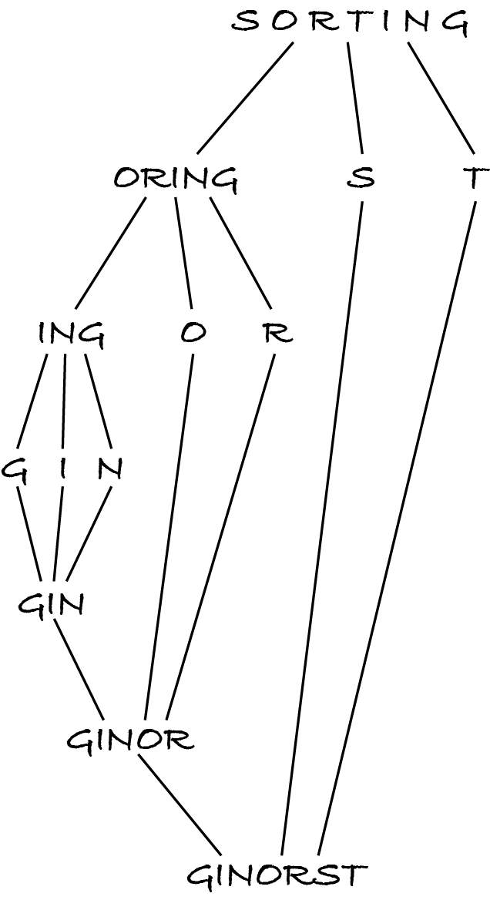

14.6. Quicksort
Like merge sort, quicksort divides the input sequence in two partitions, recursively sorts each partition and then puts them together. Whereas merge sort divides the sequence by position, in two halves, quicksort divides the items by key: those with smaller keys go into one partition, those with larger keys go in the other. After the partitions are sorted, they just have to be concatenated, which is much simpler than merging.
Insertion sort did less work than selection sort when splitting the input but more when combining the subsolution with the removed item. Likewise, merge sort does less work than quicksort when splitting but more work when combining the subsolutions.
Note: You can design different decrease-and-conquer or divide-and-conquer algorithms by making different phases of the approach simpler.
14.6.1. Algorithm
Quicksort starts by choosing one item as the pivot, then splits the other items into those smaller and those larger than the pivot. After each partition is sorted, they’re put together: first the smaller items, then the pivot and finally the larger items.
Here’s how quicksort processes our example, with the pivot being the first item:
In the first step, the pivot is S, the letters that come before S are ORING and the only letter that comes after is T. After sorting ORING into GINOR, the S and T are concatenated back in that order, resulting in GINORST.
Here’s a recursive quicksort algorithm. It uses an auxiliary function that partitions the unsorted sequence into three sequences: the smaller items, a sequence of length 1 with the pivot and the sequence of larger items.
if n < 2:
let sorted be unsorted
otherwise:
let (smaller, pivot, larger) be partition(unsorted)
let sorted be quicksort(smaller, key) concatenated with pivot and quicksort(larger, key)
Step 2.1 is an abuse of the assignment notation to make the algorithm more readable.
The partition function simply chooses the first item as the pivot and adds the other items to either partition, depending on how they compare to the pivot.
let smaller be ()
let larger be ()
let pivot be unsorted[0]
for each index from 1 to n − 1:
let item be unsorted[index]
if key(item) < key(pivot):
append item to smaller
otherwise:
append item to larger
let output be (smaller, (pivot), larger)
Note that the final step doesn’t return the pivot but a sequence with it, so that the concatenation operation can be applied in step 2.2 of quicksort.
14.6.2. Complexity
Each recursive call goes through its input sequence twice: first to partition it and then to concatenate the partitions and the pivot. The recursive complexity definition is:
if n < 2: T(n) = Θ(1)
if n ≥ 2: T(n) = Θ(n) + T(│smaller│) + T(│larger│) + Θ(n) = T(│smaller│) + T(│larger│) + Θ(n).
If the input is sorted, then the pivot (the first item) is the smallest one. So all other items are put in partition larger and partition smaller is empty. The recurrence relation becomes:
T(n) = T(0) + T(n − 1) + Θ(n) = Θ(1) + T(n − 1) + Θ(n) = T(n − 1) + Θ(n).
We’ve seen before that this resolves to T(n) = Θ(n²).
In the best-case scenario, the pivot is the middle value and quicksort halves the sequence, like merge sort. The recurrence becomes:
T(n) = T(n / 2) + T(n / 2) + Θ(n) = 2×T(n / 2) + Θ(n).
This resolves to T(n) = Θ(n log n).
It has been proven that the average complexity of quicksort, when items are in random order, is also log-linear.
Exercise 14.6.1
What’s the complexity of quicksort if the input is in reverse order?
As the analysis shows, the choice of pivot is crucial to achieve log-linear complexity. One common approach is to choose a random item. Another way is to pick the median of the first, middle and last items. Unless we’re unlucky and those three items have duplicate keys, this guarantees the pivot has neither the lowest nor the highest key in the sequence, which would lead to quadratic complexity.
14.6.3. Code and performance
The code mainly follows the algorithm with two small changes. First, the pivot’s key is computed only once. Second, the partitioning algorithm isn’t in a separate function. This makes the code shorter and easier to follow, in my opinion.
[1]:
from typing import Callable
from algoesup import test
%run -i ../m269_sorting
def quick_sorted(unsorted: list, key: Callable) -> list:
"""Return a permutation with keys in non-decreasing order.
Preconditions: for any indices i and j,
key(unsorted[i]) and key(unsorted[j]) are comparable
"""
# base case: sequences with 0 or 1 items are sorted
if len(unsorted) < 2:
return unsorted
else:
# divide the input: select the pivot and create the partitions
smaller = []
larger = []
pivot = unsorted[0]
pivot_key = key(pivot)
for index in range(1, len(unsorted)):
item = unsorted[index]
if key(item) < pivot_key:
smaller.append(item)
else:
larger.append(item)
# recur into the partitions and combine the results
return quick_sorted(smaller, key) + [pivot] + quick_sorted(larger, key)
test(quick_sorted, sorting_tests)
Testing quick_sorted...
Tests finished: 7 passed (100%), 0 failed.
Let’s confirm that sorting an ascending sequence takes quadratic time:
[2]:
for doubling in range(5):
items = list(range(100 * 2**doubling))
%timeit -r 5 quick_sorted(items, identity)
256 μs ± 865 ns per loop (mean ± std. dev. of 5 runs, 1,000 loops each)
951 μs ± 2.99 μs per loop (mean ± std. dev. of 5 runs, 1,000 loops each)
3.71 ms ± 2.53 μs per loop (mean ± std. dev. of 5 runs, 100 loops each)
15.2 ms ± 8.48 μs per loop (mean ± std. dev. of 5 runs, 100 loops each)
61.9 ms ± 30 μs per loop (mean ± std. dev. of 5 runs, 10 loops each)
To observe the log-linear complexity, I use a Python function to shuffle the items to put them in random order:
[3]:
from random import shuffle
for doubling in range(5):
items = list(range(100 * 2**doubling))
shuffle(items)
%timeit -r 5 quick_sorted(items, identity)
47.8 μs ± 109 ns per loop (mean ± std. dev. of 5 runs, 10,000 loops each)
111 μs ± 114 ns per loop (mean ± std. dev. of 5 runs, 10,000 loops each)
253 μs ± 646 ns per loop (mean ± std. dev. of 5 runs, 1,000 loops each)
588 μs ± 2.28 μs per loop (mean ± std. dev. of 5 runs, 1,000 loops each)
1.24 ms ± 996 ns per loop (mean ± std. dev. of 5 runs, 1,000 loops each)
14.6.4. In-place version
Quicksort is usually implemented in-place, swapping smaller and larger items so that the smaller items end up in the left-hand part of the sequence and the larger items in the right-hand part, with the pivot between them. Once each part is sorted, no concatenation is necessary. A visualisation explaining the in-place algorithm is here.
In-place quicksort uses less memory and is much faster than the version above because it doesn’t create and concatenate sequences. It nevertheless has the same best-, average- and worst-case complexities.
Info: Many programming languages used some variant of quicksort before Timsort was invented.